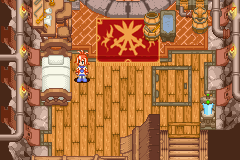
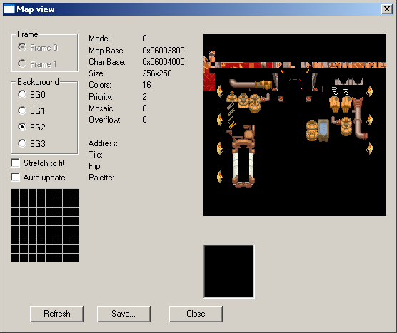
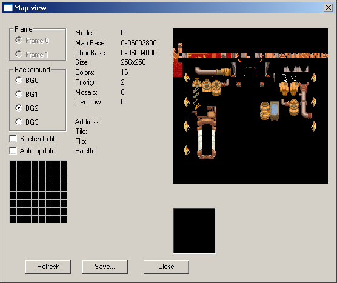
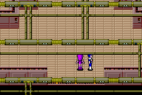
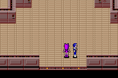

2.4 Layout, timing, OAM and special effects
The consoles do not magically know how to sort tiles out and indeed much of 3d and 2d imagery, as well as coding in general, revolves around reusing things to lessen the drain on resources; you surely have seen old RPGs where you would fight a giant rat, a plague rat which looks exactly like giant rat but with a green and dark blue/purple paint job and later fire rat which has a red, orange and yellow paint job but looks exactly like the earlier rats. To do this the GBA and DS have hardware they can employ to change things in addition to the palette although said hardware can also control what palette is used. Most of the images used thus far have been simply one tile after the other and aligned manually for the purposes of clarity but there arises the concept of tile reuse which breaks the one after the other pattern and compositing (sticking one image over another) to trouble this, both are very common techniques in 2d imagery.
2.4.1 Introduction to the OAM and BG modes.
The GBA and DS have two principle graphics types known as “BG” aka background and “OAM” aka object area memory aka sprites which work together to display games. Although you can use one to do the other, and games have done as such, for the most part the distinction is observed and backgrounds will be left to do backgrounds (a big exception on the DS is 3d which is rendered in the 3d hardware and moved to the background to display) and OAM which is left to handle the sprites and image overlays (give or take windowing). Text can be in either BG or OAM depending upon the game although BG is far more common and usually the suggested method for developers to use. Finding out what method something uses is usually best done by getting to the point in the game it is used and viewing the OAM, sprite and BG in a given emulator (VBA for the GBA and desmume both feature such abilities). Such viewers are also a fairly good ripping method.
The GBA and DS are much the same although the DS has two engines known as A and B which is ostensibly one for each screen although they are not tied to a given screen and can easily be swapped at runtime. The “A” engine has more memory, the ability to do full VRAM bitmaps as well as what mainly houses the results of the 3d (engine B can use the results of the 3d but it requires some thought) and has use of the “capture” hardware which can be used to create effects although the more general general effects/functions still work on engine B.
As with most other things on the handhelds the hardware itself has sections dedicated to running various aspects of the hardware with graphics forming a large chunk of it. DS 3d aside there are two main components that go into video
• The main handler known as “DISPCNT” is found at 4000000 hex on both the GBA and DS (although the DS only has it on the ARM9 memory mappings and has a second one for the B engine at 4001000 hex).
• The actual BG (4 16 bit sections) and OAM stuff that handles all the lower level things for each of the various modes.
2.4.2 Timing
The graphics hardware tends to act as a timer for much of the rest of the system as far as software is concerned with a very significant component of the checks, updates and similar things being started when a vblank (vertical blank) happens.
The general idea is the screen is redrawn a scanline (a horizontal line across the screen) at a time. However after each scanline is drawn there is a pause known as hblank (equivalent to time taken to draw 68 pixels on the GBA) and after all the scanlines are drawn there is another pause known as vblank (on the GBA it works out to be about the time to draw 68 lines or just shy of 84000 cycles and the 71 lines for the DS means it is more or less the same refresh rate there). As updating the locations of things could cause tearing on the screen if it were done mid refresh any updates to the screen and other things closely related to it are triggered at these times (indeed the hardware itself dedicates the first couple of bits in interrupts solely to vblank and co). Either way the refresh rate is ever so slightly less than 60Hz which is why most games will aim for a framerate of just below 60FPS or half that at 30FPS.
Although knowledge of how the hardware works in this regard is definitely worth knowing about it should really be said that unless you are doing low level programming or are hooking into the code using timers based off it most of ROM hacking is not too concerned with it and more focus is put on the OAM, display registers and memory handling. The assembly section will cover more on interrupts but in the meantime if you do want to read more theTonc video section has a nice worked example and GBAtek has a lot of numbers.
Also as mentioned interrupts are a big thing so GBAtek on interrupts.
2.4.3 GBA and DS OAM (sprites)
Sprites (occasionally known as OBJs) are probably the main workhorse of games (they are typically the things you move, the game moves and you spend most of the game focusing on) and being able to manipulate them is a useful feature. The GBA supports up to 128 of them at any one time and each is given a section of memory.
07000000 hex is the location of the OAM on the GBA with obj 0 at 07000000 hex, obj1 at 07000008 hex obj2 at 07000010 hex, obj3 at 07000018 hex and so forth.
The DS is much the same but it has a second bank at 7000400 hex that is also 1 Kbyte long for engine B.
It gets quite complex and as not much beyond a basic appreciation of the concepts is necessary for most hacking work (if you have an appreciation for how it works, can look it up and with the help of the documents decode the values found that is good enough for most things), still you are referred to GBAtek which has a full listing if you want it.
Three 16 bit values make up most of the useful things and packed into each of those 16 bits
Attribute 0 - First 16 bits - Y coordinates (bits 0 to 7 leading to 256 options)
Attribute 0 - Second 16 bits - X coordinates (bits 0 to 8 leading to 512 options)
Attribute 0 - Third 16 bits - name, priority and 4 bpp palette selection
Priority is for each obj relative to the backgrounds and the lower values of objs have a higher priority relative to each other.
The other bits are used for rotation, flip, size and scaling options with the remaining 16 bits in the range used for the payload of the rotation and scaling functions when they are employed.
Most of the time edits to them are done manually with just a few tweaks or handled at function level when dealing with assembly but if you do need to edit them there are tools. Equally there are formats in the case of the DS that handle initial values/setup of it for various files so editing those is often more useful.
OAM calculator for the DS Filetrip download
If you need to edit OAM on the DS (it might also work for the GBA but be wary as a couple of things on the priority side of things are changed) or likewise decode a value you need not do it by hand thanks to this tool. Usage is fairly straightforward

PIC
Basic emulator view This just has a quick example of viewing the memory (editing is sometimes possible here but often refreshed every vblank). From here you would trace the thing that originally changed the OAM and change things in the original binary (the DS quite often has helper formats for the graphics and the GBA was fairly good about keeping the actual binary code and the OAM values separate). It is also an early preview of animation via the OAM as well.
GBA VBA. The sprite here is actually made up of multiple tiles.
PIC
PIC
DS Desmume.

PIC

PIC
2.4.4 GBA and DS BG modes
The BG modes tend to be for backgrounds, text and some menus, as well as providing the end result of the 3d rendering on the DS. On both the GBA and DS there are 4 backgrounds given the name 0 through 3 (again the DS has a second set of BG modes for engine B).
On the GBA there are 4 BG layers (0 through 3) and 7 modes, although different layers are restricted in what they can run. BG layers can be a higher resolution than the screen if given the right options/conditions and such things can be used for animation and general game usage to save having to stream content.
How it works There are two main options here for developers to use in games.
- Use a bitmap image
- Generate a background from tiles
The second is superior in most cases owing to the ability to do animations more easily (as mentioned previously the hardware is incapable of refreshing an entire bitmap each screen update) and as such is used by the majority of games.
2.4.5 Emulator shots
Most of the debugging emulators feature the ability to see the various layers that make a background. Typically this is called something like “view map”. Examples of the VBA ones are present in the next few examples of other methods and it is much the same for any emulator with the only differences being in how much the hardware supports.
Scrolling The BG can be placed behind something and scrolled as a type of animation (often combined with other sorts of animation) or just have a larger BG section to focus the rest of the window on (there are other methods by which to have bigger “rooms” than the screen so do not assume this is how a game does it).
Visible in many games but an especially nice example exists in Tetris worlds for the GBA. From the same BG image the impression of random stars is given as a background.

PIC
Another good example exists in the first advance wars which actually makes use of the wrapping ability (see the lack of a complete Yellow Comet flag/logo)
PIC
Layering effects The classic example of this feature being used is beds in RPG games where the character will have a head visible above the pillow but the rest is covered. To do this there will be at least two layers with one being assigned a higher priority than the sprite and the second being assigned a lower one.

 


PIC
After disabling BG1

PIC
The second classic example which is slightly less involved is where trees or a structural beams will be placed over the game map allowing the sprites to move underneath them. Here many emulators will allow you to disable layers which can be useful when ripping maps to generate a game walkthrough.


Example of beams from Phantasy Star 2


PIC
2.4.6 Basic animation
As the OAM can control what is on screen and where things are it is the thing responsible for most animation. There are additional abilities in rotating, scaling and such but those will be covered later. Although it is fairly obvious when seen from static images it should be noted that seeing it in real time is better so if you have the chance then do so.
There are concepts to consider.
- Screen movement
- Sprite swapping
As you will see later in video if you swap the images displayed on a screen fast enough it will appear to the human eye as though they are moving. This means you can swap sprites out to the relevant places after a given number of frames (the screen gets updated every vblank which is both the conventional and suggested point at which this is done). Combine this with movement of the screen or background and you get the impression of movement. Now, as you might have seen in the imagery representation section, images tend to be composed of multiple tiles so you do not have to swap an entire sprite set if you can swap swap the top half of a body instead and have the character throw their arms up as a result though this technique can go much further.
Formats will be covered in a few sections from here but the DS SDK does provide developers a fairly seldom used animation format known as NANR but moving back to the hardware there are several good examples of this in the Ace Attorney (Phoenix Wright) series.
Dragon Quest Rocket Slime The game provides a great example of OAM animation in the pre title screen sequence. Again if you can see it in real time it is quite a lot clearer.

PIC

PIC

PIC
Original Phoenix Wright animation The above was plain animation via OAM but games occasionally get more interesting.
The first Phoenix Wright game had some fairly notable character animations but rather than redrawing each frame of the animation the characters themselves were actually split into components (usually face and hands) and those swapped out as necessary to create animation. The tile view is not quite how the internal formats do it (those usually being set up to take advantage of the hands and face being one visual concept).
PIC

PIC
Background animation The scrolling effect was mentioned already but if you are using a tiled background you can change the tiles the make up the background and create animation there. Animations with bitmap images has often been done on a programming basis but much of that is either very obvious or quite arcane and steeped in programming methods.
Another use of the scrolling effect is more commonly used as camera animation in 3d imagery but here if you rapidly move around the BG map a “camera shaking” effect is created and is well documented/entrenched in cinematography as something seen when a character or location is startled or hit.
Palette animation It has been mentioned briefly in the past but there is also the matter of palette animation aka dynamic palettes to consider as well. Here the game will change a colour or a handful of colours in the palette and this has a corresponding change in the main game.
From Summon Night Swordcraft Story 2 a quick sample of three stages of an animation. Changing parts of the palette have a black square added around them.

PIC
The game, unlike most on the GBA, also features a few different colour modes for the original GBA, GBA-SP, TV and the option to change brightness on a slider.
Developer tricks There is more on this in part III but some on 2d for now. The idea here is the developer will do things to make the demands on system resources less and in doing so allow them the potential for a larger amount of other things to be done which is always good.
For instance a character walking left is much the same as a character walking right so you only need to animate one direction and flip the sprites over. This might also trickle down into the sprite itself which will not be seen holding a weapon or something that will mark it as a flipped sprite.
If an area of a level is not being seen at present there is no need to animate it. The basement/smithy of the Summon Night Swordcraft Story 2 used in the palette animation section provides a great example. The 3d equivalent of this is backface culling and viewpoint rendering.
Another effect commonly seen in 3d animation but still useful in 2d, and seen in several games, is the addition of a single dark circle as a shadow.
2.4.7 Window feature
Although you can fill the whole screen the GBA and DS have abilities to pick and choose things to show and the technique is known as windowing. The basic idea is the mode is triggered which selects a region (you have two windows allowing for a four way split if you prefer) and you can change the display of BG and OBJs within it. Various things and games can employ it in the actual game but menus are a common usage.
GBAtek windowing feature explanation/description. The feature first has to be enabled in the DISPCNT register and then has the windows defined in other registers which can then have various BG or OBJ layers disabled as appropriate but do remember that transparency can be made to work for the BG so do not always expect windows to be used.
An animation technique can be done here and henke37 noted that things can be tweaked on hblank to create certain effects beyond the obvious classical or offset windows with ghost trick (see around 5:20) providing a nice example.
2.4.8 Special features (flipping, affine transformation, alpha and such)
Despite all the limited memory and quirks the GBA and DS or perhaps because of it both feature all sorts of methods that developers can employ to perform various alterations to the images seen.
In OAM transformation Mentioned briefly a few paragraphs back the OAM has options to flip sprites and individual tiles. and is quite often used to have characters walk to the left or walk to the right despite using a single set of sprites (you can see an example of it up in the GBA OAM viewing section). Double size is also available although intended use seems to be for working around affine transformation induced issues (preventing parts from being clipped off when rotated in most cases) rather than the immediately obvious (although that works as well).
Affine Many guides and documents will refer to this by the two most common things it does, which are the other two big transformations done to geometry known to most as rotation and scaling (the third one, translation, being fairly well taken care of by everything else). Strictly speaking though it does allow for shear transformation and some other things and so the term affine transformation is more fitting.
In the case of sprites/objs it is split across the first two attributes and the fourth hidden ones. The s in ones is not a typo as the normally unusual 4th attribute is in fact affine transformation data but it allows for 32 attributes (somewhat less than the 128 objects possible but that is not so bad as there is nothing stopping things from sharing a set of attributes) in all as the first four hidden attributes are used for a single transformation value and this is repeated.
Attribute 0 activates the mode
Attribute 1 selects the transformation grouping in bits 9 to 13.
The hidden attribute 3 is in fact split over four hidden attributes as mentioned and each carries one 16 bit value (signed 1 bit sign, 7 bits integer, 8 bits fraction format) corresponding to what are known as PA,PB,PC and PD which can be used to effect rotation, scale and shear transformation and all the same time if necessary (it does not quite work like it but if you imagine having control of every corner and how you can use that to scale things, shear things and rotate things at the same time) .
Tonc has a worked example of a lot of the maths involved (in many ways it is as complex as maths in ROM hacking gets outside of some very in depth assembly hacking), it also returns after a fashion for the 3d system. It will be returned to there in earnest as it underpins the entire 3d system.
For those used to the maths the reference point is the top left of the object rather than the screen and the rotation centre is set as the middle of the sprite. In some ways this is quite limiting as some interesting things can be accomplished with different origins and centres of rotation but it does serve to simplify things for basic transformations.
GBAtek has basic listings and tonc has more worked examples.
BG affine transformation is slightly more involved but follows much of the same logic, GBAtek has more.
Mosaic Usually seen as the single corner pixel repeats for every unset pixel in the rest of the screen but it is available for smaller values. Has to be enabled in the individual control register and then set accordingly in 400004C hex but is available for all the BG layers as well as equivalents for sprites. GBAtek mosaic section and Tonc has some nice worked examples.
Alpha and brightness Alpha blending is a method by which two images can be merged together, the not entirely accurate but layman’s equivalent term being called transparency, and can be used to achieve a variety of effects. Note that the DS 3d system has a rather more complex setup for alpha depending upon textures used and more.
For the most part alpha is a flag and variable which is to say if it wants to be alpha blended there will be a flag to say so and somewhere else a variable to say by how much (this is also where the 3d differs slightly in some modes).
Brightness adjustment, which the DS has a special mode in the capture unit for, is also possible with it being available instead of alpha if you want it. Note that many developers instead chose to alter brightness at the palette level for the original GBA model hence the hacks to restore colours that looked rather washed out in later GBA models.
Three registers are used here with 04000050 hex aka BLDCNT being the main select this mode 4000052 hex aka BLDALPHA being the alpha modes and 4000054 hex aka BLDY doing for the brightness. Note that although sprites can be blended here the setting can be overridden to always blend in the OAM.
GBAtek has more depth and full listings.
Mode 7 The SNES (which the GBA owes a lot to in terms of abilities and hardware design) was one of the first to allow for a perspective transformation of an image. Though now looking quite poor to those used to modern 3d imagery it was revolutionary at the time, so much so the hardware term from the SNES became shorthand for the technique. Tonc has more.
2.4.9 Basic DS layout formats and mapping
Although games and indeed many games do use raw formats and declare what they should be rendered as/mapped to elsewhere (or just have a tile for every tile on the screen) the nitroSDK provides several formats for developers to use. They range from simple wrappers for a layout to full animation formats. Also worth noting is that if an image is composed of tiles some of those tiles might be reused as a kind of compression so you might have to edit those (this is very often the case in Japanese puzzle games where text is part of the image and the two kanji can afford to have a blank tile in the middle).
A basic demonstration of the compression/tile reuse concept
PIC
A few clicks later

PIC
Palette formats
NCLR
Occasionally seen as RLCN it is a palette format. Most of the time a fairly pointless wrapper for the palette but other times does act as an archive format.
NTFP
Technically part of the NCLR format but seen quite often by itself and especially on earlier games.
.PAL
Not always a palette (it still being the shorthand for European and Australian TV standards and so versions of games aimed at there will sport that extension) but quite often palettes are seen with this extension.
Tile storage Tiles themselves need to be stored and various archive formats have been made for them
NCGR
A format that includes all the relevant data about the data stored (widths, heights, colour depths, whether it is tiles or not and more). Aimed more at sprites/objs but remember full screen images are possible and still used for BG type images.
NTFT
Another raw format that is technically part of another (in this case NCGR) but seen by itself on occasion.
NSCR
Aimed at background (BG) images and contains information on how to decode and set things up.
NTFS
Once more part of a bigger format (NSCR in this case)
Mapping Mapping merely involves arranging the OAM or BG into the proper order. It can be done in many ways but the nitroSDK provides a handful of methods although many are encompassed either by animation or by the storage methods themselves.
NCER
Aimed at sprites and provides initial OAM data among other things.
Animation
NANR
An infrequently used animation format.
NMCR
A format seen in pokemon to provide animations. In some ways it might be considered a wrapper to NANR.
Fonts It will be covered later in the text hacking section but there is a fairly complex font format many DS games use. Many other games use equally complex formats where others might use simple plain tiles (maybe in a slightly odd size).
NFTR
A font format the includes character widths/dimensions, line locations and various types of mapping available.
General observations Most DS editing programs will feature editing abilities for these formats and related ones and exporting and importing should not be a problem. However if you are after a more general image editor and have one that supports the Susie plugin format (a fairly popular plugin format seen in a lot of Japanese image editors) loveemu’s nitroscrap heads down such a path.
Although they can and frequently are found by themselves they might be put into basic container formats like narc, custom ones as will be covered several times over during the course of this guide, occasionally stripped of components of (maps being ignored and such), be stripped down to the their basic components (basically a headerless file), have a single palette for an entire range of images (often this will be named accordingly but not always and either way it can confuse programs that expect the same name, which is most of them). This is especially true of animation which rarely uses the NANR format.
The formats have remained largely static over the course of things although pokemon has a habit of changing a few things, using rarely used features and reworking some others so tools built to earlier standards might not work properly with that franchise.
The names above are the extensions the files that carry them usually have but they are occasionally known by the magic stamp which is usually a reversed version of the extension (NCLR=RLCN and such).
In the absence of the formats at the end of the document
Lowlines current specifications
Tinke source code (trunk/ Tinke/ Imagen and trunk/ Plugins)
Nintendo VieWer source code (python)
They are largely aimed at programming with the latter two being source code to various programs.
2.4.10 Video memory handling and alignment
The GBA and DS video systems are quite in depth which serves both to work around issues of low power and to provide developers the options to do things they might otherwise have to spend a lot of time programming. One of the more interesting aspects of this is the memory handling as it is quite possible to run out and there are other quirks such as alignment.
2d memory management Games, especially on the GBA but the DS is no easy street, frequently push up against the limits of the memory and this means there is certainly not so much of it you can never run out and with certain graphics modes it is very easy to do. As ROM hacking so often wants to add things you will probably brush up against this eventually. The most common scenarios are you have a 2d overlay on a background and either the repeated tiles want to be edited or you want to extend the overlay a bit and run out of memory that way.
pineight.comdetails a streaming method homebrew programmers can use to hopefully never run out of ram. DS programmers are not quite so fortunate and will tend to have to fiddle with maps and tiles or accept a slightly lesser image.
Alignment In short the GBA VRAM will only accept writes to values aligned to 16 bits and this most commonly rears up when compression is being dealt with. It has had such an effect that it led to a whole class of methods being described as VRAM safe or otherwise WRAM safe if they do not work on VRAM. Unless you are physically managing the VRAM as part of a hack (and not say relying on a function to read so much from the cart into it) it is usually just a matter of making sure you select the “VRAM safe” compression function of whatever program you are using.